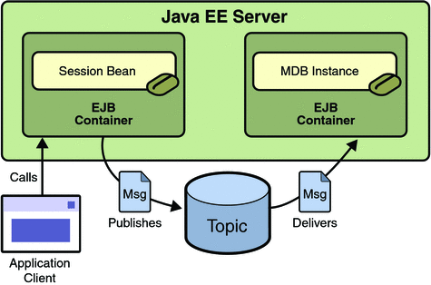

A Java EE Application That Uses the JMS API with a Session Bean
This section explains how to write, compile, package, deploy, and run a Java EE application that uses the JMS API in conjunction with a session bean. The application contains the following components:
An application client that invokes a session bean
A session bean that publishes several messages to a topic
A message-driven bean that receives and processes the messages using a durable topic subscriber and a message selector
The section covers the following topics:
Writing the Application Components for the clientsessionmdb Example
Building, Deploying, and Running the clientsessionmdb Example Using NetBeans IDE
Building, Deploying, and Running the clientsessionmdb Example Using Ant
You will find the source files for this section in the directory tut-install/javaeetutorial5/examples/jms/clientsessionmdb/. Path names in this section are relative to this directory.
Writing the Application Components for the clientsessionmdb Example
This application demonstrates how to send messages from an enterprise bean (in this case, a session bean) rather than from an application client, as in the example in Chapter 23, A Message-Driven Bean Example. Figure 32-1 illustrates the structure of this application.
Figure 32-1 A Java EE Application: Client to Session Bean to Message-Driven Bean
The Publisher enterprise bean in this example is the enterprise-application equivalent of a wire-service news feed that categorizes news events into six news categories. The message-driven bean could represent a newsroom, where the sports desk, for example, would set up a subscription for all news events pertaining to sports.
The application client in the example injects the Publisher enterprise bean’s remote home interface and then calls the bean’s business method. The enterprise bean creates 18 text messages. For each message, it sets a String property randomly to one of six values representing the news categories and then publishes the message to a topic. The message-driven bean uses a message selector for the property to limit which of the published messages it receives.
Writing the components of the application involves the following:
Coding the Application Client: MyAppClient.java
The application client program, clientsessionmdb-app-client/src/java/MyAppClient.java, performs no JMS API operations and so is simpler than the client program in Chapter 23, A Message-Driven Bean Example. The program uses dependency injection to obtain the Publisher enterprise bean’s business interface:
@EJB(name="PublisherRemote") static private PublisherRemote publisher;
The program then calls the bean’s business method twice.
Coding the Publisher Session Bean
The Publisher bean is a stateless session bean that has one business method. The Publisher bean uses a remote interface rather than a local interface because it is accessed from the application client.
The remote interface, clientsessionmdb-ejb/src/java/sb/PublisherRemote.java, declares a single business method, publishNews.
The bean class, clientsessionmdb-ejb/src/java/sb/PublisherBean.java, implements the publishNews method and its helper method chooseType. The bean class also injects SessionContext, ConnectionFactory, and Topic resources and implements @PostConstruct and @PreDestroy callback methods. The bean class begins as follows:
@Stateless
@Remote({PublisherRemote.class})
public class PublisherBean implements PublisherRemote {
@Resource
private SessionContext sc;
@Resource(mappedName="jms/ConnectionFactory")
private ConnectionFactory connectionFactory;
@Resource(mappedName="jms/Topic")
private Topic topic;
...The @PostConstruct callback method of the bean class, makeConnection, creates the Connection used by the bean. The business method publishNews creates a Session and a MessageProducer and publishes the messages.
The @PreDestroy callback method, endConnection, deallocates the resources that were allocated by the @PostConstruct callback method. In this case, the method closes the Connection.
Coding the Message-Driven Bean: MessageBean.java
The message-driven bean class, clientsessionmdb-ejb/src/java/mdb/MessageBean.java, is almost identical to the one in Chapter 23, A Message-Driven Bean Example. However, the @MessageDriven annotation is different, because instead of a queue the bean is using a topic with a durable subscription, and it is also using a message selector. Therefore, the annotation sets the activation config properties messageSelector, subscriptionDurability, clientId, and subscriptionName, as follows:
@MessageDriven(mappedName="jms/Topic",
activationConfig=
{ @ActivationConfigProperty(propertyName="messageSelector",
propertyValue="NewsType = ’Sports’ OR NewsType = ’Opinion’"),
@ActivationConfigProperty(
propertyName="subscriptionDurability",
propertyValue="Durable"),
@ActivationConfigProperty(propertyName="clientId",
propertyValue="MyID"),
@ActivationConfigProperty(propertyName="subscriptionName",
propertyValue="MySub")
})The JMS resource adapter uses these properties to create a connection factory for the message-driven bean that allows the bean to use a durable subscriber.
Creating Resources for the clientsessionmdb Example
This example uses the topic named jms/Topic and the connection factory jms/ConnectionFactory, which you created in Creating JMS Administered Objects for the Synchronous Receive Example. If you deleted the connection factory or topic, you can create them again using targets in the build.xml file for this example. Use the following commands to create the resources:
ant create-cf ant create-topic
Building, Deploying, and Running the clientsessionmdb Example Using NetBeans IDE
To build, deploy, and run the application using NetBeans IDE, do the following:
Start the Application Server, if it is not already running.
In NetBeans IDE, choose Open Project from the File menu.
In the Open Project dialog, navigate to tut-install/javaeetutorial5/examples/jms/.
Select the clientsessionmdb folder.
Select the Open as Main Project check box and the Open Required Projects check box.
Click Open Project.
Right-click the clientsessionmdb project and choose Build.
This task creates the following:
An application client JAR file that contains the client class file and the session bean’s remote interface, along with a manifest file that specifies the main class
An EJB JAR file that contains both the session bean and the message-driven bean
An application EAR file that contains the two JAR files
Right-click the project and choose Undeploy and Deploy.
Right-click the project and choose Run.
This command returns a JAR file named clientsessionmdbClient.jar and then executes it.
The output of the application client in the Output pane looks like this:
To view the bean output, check <install_dir>/domains/domain1/logs/server.log.
The output from the enterprise beans appears in the server log (domain-dir/logs/server.log), wrapped in logging information. The Publisher session bean sends two sets of 18 messages numbered 0 through 17. Because of the message selector, the message-driven bean receives only the messages whose NewsType property is Sports or Opinion.
Undeploy the application after you finish running the client. To undeploy the application, follow these steps:
Click the Services tab.
Expand the Servers node.
Expand the Sun Java System Application Server node.
Expand the Applications node.
Expand the Enterprise Applications node.
Right-click clientsessionmdb and choose Undeploy.
To remove the generated files, right-click the clientsessionmdb project and choose Clean.
Building, Deploying, and Running the clientsessionmdb Example Using Ant
To build the application using Ant, do the following:
Start the Application Server, if it is not already running.
Go to the following directory:
tut-install/javaeetutorial5/examples/jms/clientsessionmdb/
To compile the source files and package the application, use the following command:
ant
The ant command creates the following:
An application client JAR file that contains the client class file and the session bean’s remote interface, along with a manifest file that specifies the main class
An EJB JAR file that contains both the session bean and the message-driven bean
An application EAR file that contains the two JAR files
The clientsessionmdb.ear file is created in the clientsessionmdb/dist directory.
To deploy the application and run the client, use the following command:
ant run
Ignore the message that states that the application is deployed at a URL.
The client displays these lines:
running application client container. To view the bean output, check <install_dir>/domains/domain1/logs/server.log.
The output from the enterprise beans appears in the server log (domain-dir/logs/server.log), wrapped in logging information. The Publisher session bean sends two sets of 18 messages numbered 0 through 17. Because of the message selector, the message-driven bean receives only the messages whose NewsType property is Sports or Opinion.
Undeploy the application after you finish running the client. Use the following command:
ant undeploy
To remove the generated files, use the following command in the clientsessionmdb, clientsessionmdb-app-client, and clientsessionmdb-ejb directories:
ant clean